Email campaigns are based on data in marketing lists.
In order to prepare a campaign in Oro application, you need to create a marketing list first. This list will be synchronized with the dotmailer address book.
Go to Marketing>Marketing Lists and click Create Marketing List.
| Field | Description |
|---|---|
| Name | Name used to refer to the marketing list in the system. |
| Description | Optional field. Can be filled with text to help you and other users understand the purpose of the list in future. |
| Entity | Data to be synchronized into the Marketing list will depend on the entity that you select. |
| Type | Type refers to the type of marketing list update. Dynamic Type means that all changes you make to your marketing list will be automatic. On Demand means that updates will be performed manually. |
| Owner | The user who is responsible for the marketing list. |
You can add multiple columns to your marketing list but at least one column must contain contact information. In our case, it is vital to add an email column along with the first and last name of the contact.
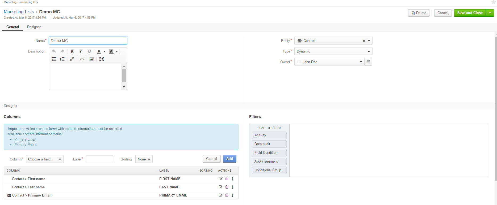Click Save and Close when you are finished.
Once the integration has been configured and its status has been set to Active, the list of address books will be automatically imported from dotmailer to Oro application. At this point, Oro marketing lists can be connected to existing dotmailer address books.
As an illustration, let us create a new Address Book on the dotmailer side.
In your dotmailer account, navigate to the top right corner and select My Contacts from the dropdown. Clicking the New Address Book button will redirect you to a page with the following fields to fill in:
| Field | Description |
|---|---|
| Name | Enter the name for your address to identify it within the system. |
| Folder | By default, Address Books is the selected folder. |
| Description | Add description for the address book if necessary. |
Click Save when you are done.
Hint
In OroCRM, you can add new address books straight from Connect to dotmailer dialog box.
Now, we need to upload contacts from OroCRM into our newly created address book in dotmailer. In order for OroCRM to see this address book:
You can map contacts from OroCRM marketing list into your dotmailer address book the following way:
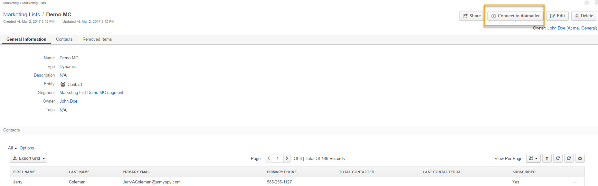
A pop up form will emerge will the following fields to be defined:
| Field | Description |
|---|---|
| Integration | Choose your Integration from the list of integrations available in your OroCRM instance. |
| Address Book | Select the address book that we have just created from the list of all dotmailer address books available for connection. Note that the list will not contain the All Contacts and Test address books that are automatically generated in dotmailer. Nor will it contain the address books that have already been connected to another marketing list in Oro. |
| Create new Entities | This check box controls whether new entities can be created. If a contact is found in an address book but no email match in the application is found, a new entity will be created in the application based on the mapping setup. A new entity will be created only if two way sync mapping is configured for each of the entity’s required fields. |
As soon as the connection has been saved, contacts from the marketing list will be automatically exported from Oro to dotmailer. Since then, data synchronization (import and export) between Oro and dotmailer will be performed automatically every 4 minutes.
Note
One marketing list may only be connected to one dotmailer address book, and vice versa. Therefore, each connected Oro marketing list will be represented as an address book in dotmailer. Also, note that only marketing lists with email fields can be connected.
Once you have connected your marketing list, you will notice a dotmailer button appear at the top (instead of Connect to dotmailer) with the following actions in the dropdown:
| Field | Description |
|---|---|
| Synchronize | Start sync between the marketing list and the address book manually. |
| Refresh Data Fields | Manually mark all marketing lists updated to make sure data fields data is up to date in dotmailer after the next synchronization. |
| Connection Settings | Change connection or integration for the current marketing list in OroCRM. |
| Disconnect | Disconnect the list from the segment. |
At this point, if you go back to dotmailer, you will be able to see data from OroCRM (subscribers’ first and last names and contact details) synced into your dotmailer address book.
We have configured integration between OroCRM and dotmailer and created a mailing list on the OroCRM side and an address book on the dotmailer side. It is time to create a new email campaign via dotmailer:
Hover over the Campaigns menu in your dotmailer account and select New Campaign.
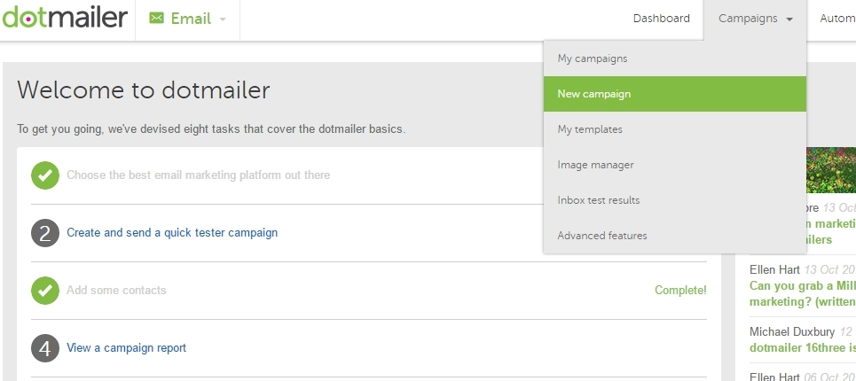Pick a template for your email campaign.
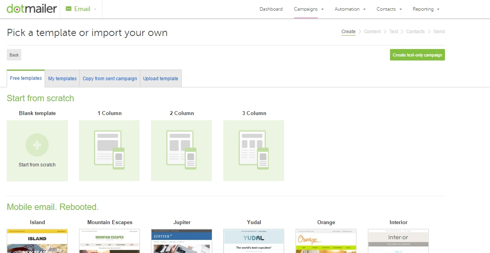Give your campaign a name and click Continue.
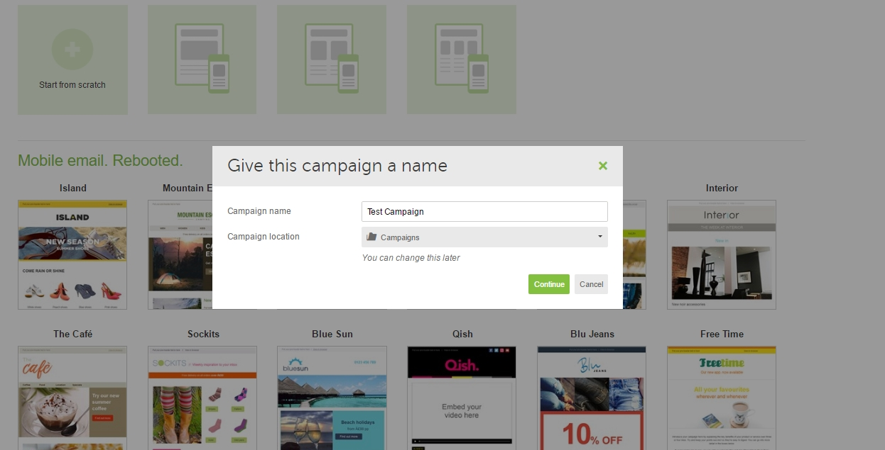On the next page, complete the following fields:
| Field | Description |
|---|---|
| Subject Line | Enter the subject for your email. |
| Friendly From Name | Enter the name of the sender. |
| Select From Address | The dotmailer assigns its own email address and domain so that in case of any complaints or issues, they would be separate from your current domain. |
| Optional Forwarding Address | Email responses can be forwarded to your regular email address. |
| Campaign Tags | Enter tags for your email campaign. |
Personalization is available for two fields: Subject Line and Friendly From Name.
It is possible to prefix the recipient’s name with the data stored in OroCRM. You can do this by clicking on the icon above the field (as shown in the screenshot) and selecting the personalization option that suits you best from the dropdown menu.
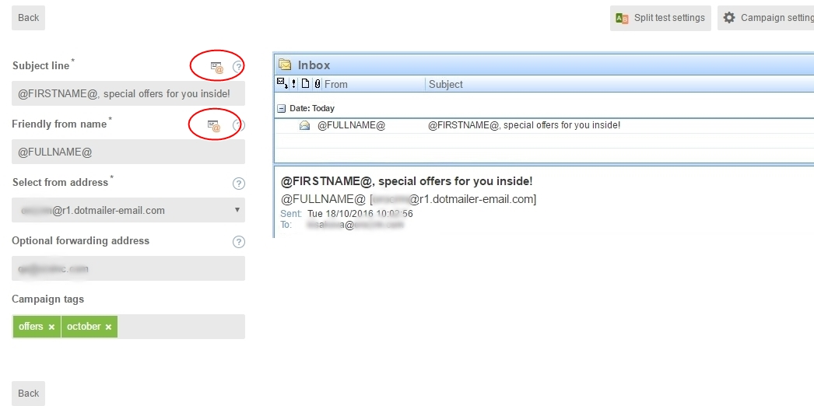Click Save and Continue when you are done. You will be redirected to the Test and Proof Your Email page.
On the Test and Proof Your Email page, it is possible to choose contacts to send a text version of your email to the selected email addresses.
Click Test Send when you have chosen your contacts. You should have a copy of the email delivered to the specified email address.
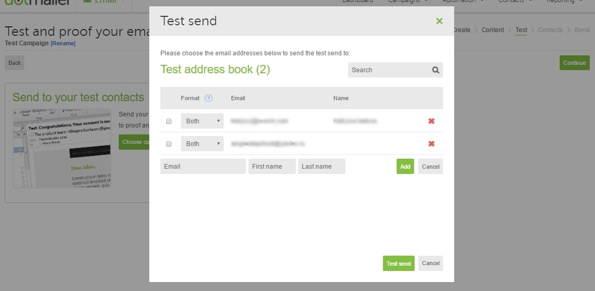When you are finished, click Continue to get redirected to the next page and select contacts for the campaign:
Click Save and Continue and confirm your selection by clicking Continue.
Review your campaign details and click Send Immediately at the bottom.
Click Confirm to confirm sending.
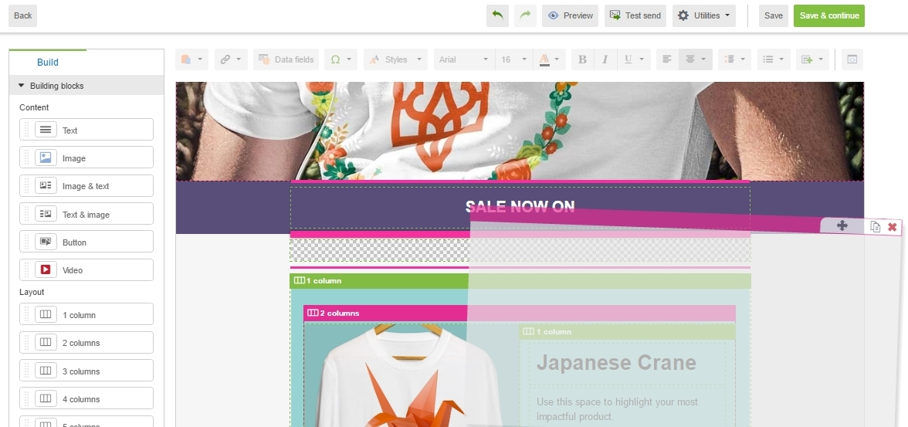 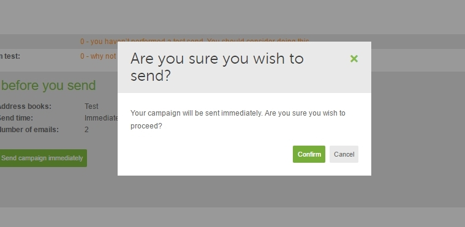To check the statistics for your campaign on the dotmailer side, navigate to Reporting>Campaign Reports on the top right.
Once you have sent out your email campaign in dotmailer, information about your email campaign should have been exported to OroCRM.
As soon as export has been completed, your email campaign should appear in Marketing>Email Campaigns. By clicking on your recent campaign, you will be able to see subscriber activity statistics, such as the number of clicks, bounces, opens, etc. Numbers in each column for each contact define the number of times an action has been performed, e.g. 2 opens, 1 click, 1 unsubscribe.
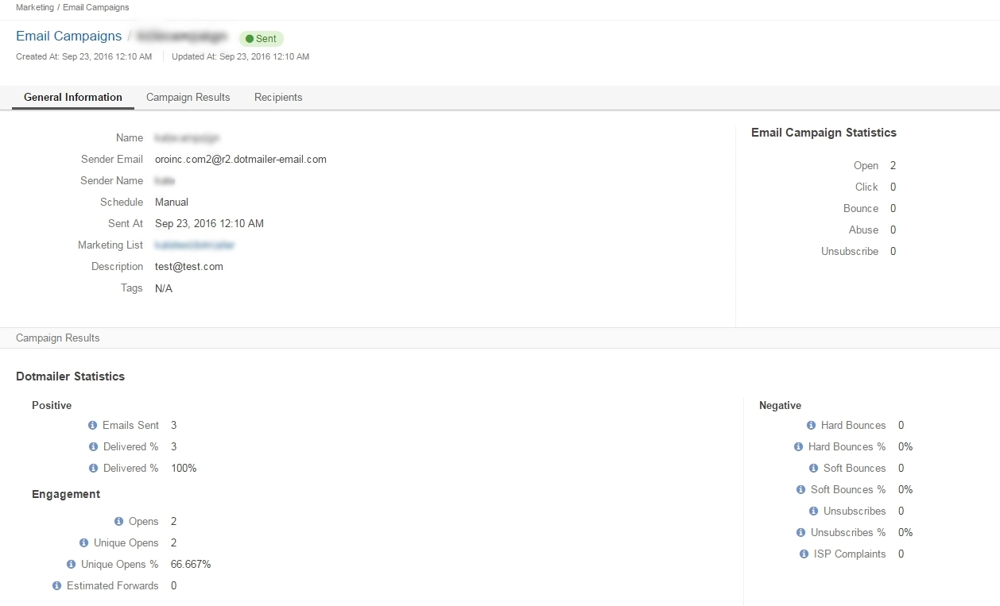These statistics will help you understand the outcome of your campaign and let you filter contacts for the next one.
For example, if you want to send your next email campaign to those contacts who have opened your previous emails, go to Marketing>Marketing List> and click Create New Marketing List. Fill in the mandatory fields, remembering to include at least one contact column below.
In the Filters section:
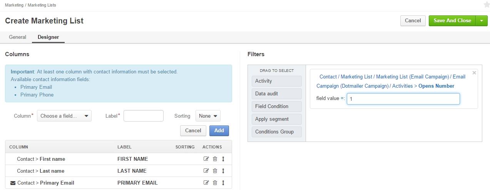
This list will now appear in the marketing list page and will contain all contacts who have opened your previous emails.
Similarly, you can apply any conditions of your choice.
Related Topics on Marketing Automation